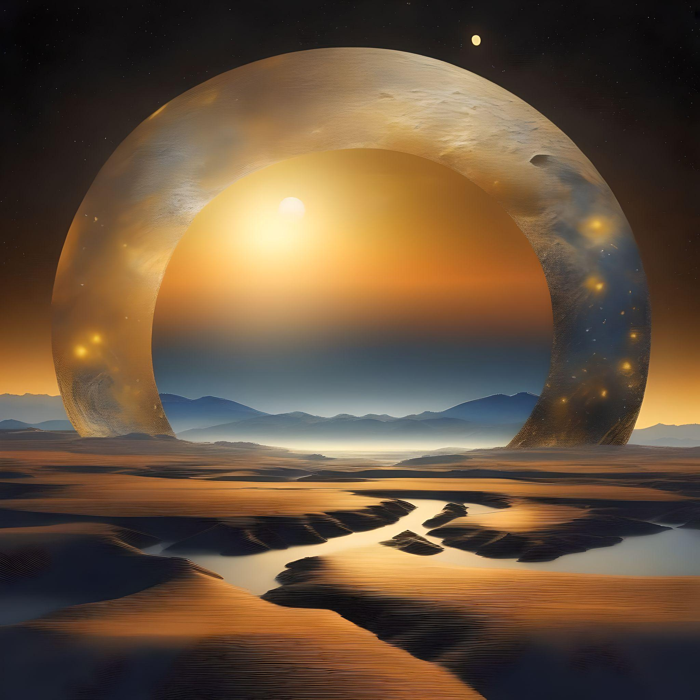
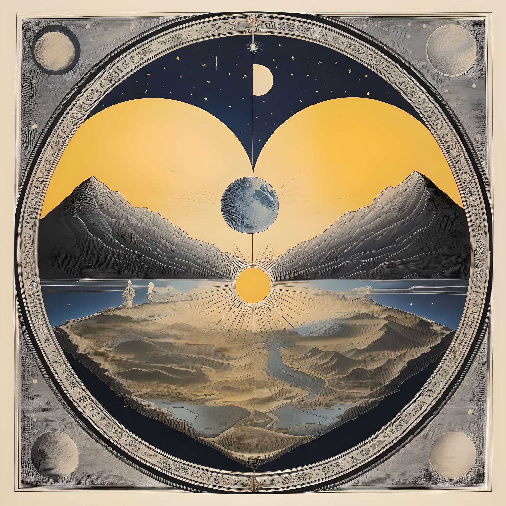

Сумерки
Глава 2
Глава 2
Так как они не понимали друг друга в письменном виде, им пришла в
голову идея упростить способ общения, ведь они действительно хотели узнать
друг друга получше. Прошло несколько дней, и эти двое становились все ближе
и ближе друг к другу, ведь несмотря на то, что их разделяла божественная воля,
им удалось установить связь, которая не подчинялась законам самой вселенной,
в которой они жили. После стольких дней, проведенных вместе, они делились своими
мирами, идеями и чувствами, которые даже не представляли, что смогут разделить с
кем-то еще. Они быстро поняли, что зажгли искру, столь же прекрасную, сколь и опасную,
столь же нежную, сколь и смертоносную, которая заставляла их чувствовать себя так же хорошо,
как и пугала. Они открыли для себя самую чистую и искреннюю форму любви, любви во всей ее сути,
то, что не уважает никаких ограничений или стандартов, а только желание двух существ быть вместе.
Тогда Sunset и Moonlight начали размышлять, смогут ли они когда-нибудь быть вместе, они положили
свои руки рядом друг с другом на траву у стены, с самым сильным желанием быть бок о бок, глядя друг
на друга с огромной страстью, а одинокие слезы бежали по их щекам, прежде чем упасть и высохнуть на траве,
Они задавались вопросом, почему небесные существа так поступили с ними, почему мир настолько несправедлив,
что два человека, которые впервые в жизни нашли причину, повод продолжать бороться каждый день,
не могут достичь единственной вещи в мире, которая заставляет их чувствовать себя хорошо.
Решив быть вместе и будучи, вероятно, двумя самыми яркими умами в стране, эти двое решили объединить усилия, чтобы прийти к какому-то выводу или разрушить тот барьер, который был объявлен врагом номер один для любви, которую они испытывали друг к другу. Они проводили дни в поисках, анализируя и в некотором роде деликатно изучая этот барьер всеми возможными способами, поскольку другие объекты в природе могли свободно проходить сквозь эту стену, но по какой-то небесной причине эти существа никогда не могли совершить подобное. Казалось, что каждый шаг, сделанный в направлении ответа, на два шага отдаляет их от правильного ответа на этот вопрос в их исследованиях, что часто приводило их к некоторому истощению и усталости от поиска чего-то, что просто невозможно исследовать или завоевать. Я думаю, что это чувство в какой-то степени свойственно нам. Искать что-то большее и изо всех сил бороться за это, в то время как все вокруг, кажется, осуждает тебя и усложняет твой путь, но правда в том, что большинство вещей во Вселенной совершенно неподвластны нашему контролю, это просто расстраивает, но это не повод сдаваться и двигаться вперед, вот почему Sunset и Moonlight всегда просыпались с улыбкой на лице, используя это пламя как топливо и борясь, чтобы найти причину всего этого.
Однажды, уже совершенно измученные, но не теряющие надежды, они подошли к барьеру, обозначенному тонкой белой линией на земле, медленно посмотрели друг на друга, наблюдая, как солнце линейно опускается за горизонт, и подарили друг другу свою последнюю улыбку. Присмотревшись друг к другу, они поняли, что больше не собираются подчиняться естественному порядку, которому мир заставлял следовать эти две души, и решили, что они уже лишили их единственного, что когда-либо имело смысл, - обладания друг другом. В порыве мужества, сразу после последней улыбки, Мунлигт высоко поднял пять пальцев, и Sunset сразу же понял, что это будет как последний отсчет времени: пальцы опускались один за другим, и оба вспомнили все те дни, которые они провели вместе, и как сильно они ненавидели этот барьер, и как они были благодарны только за последние и лучшие дни в своей жизни. Когда последний палец был опущен, оба закрыли глаза и побежали навстречу друг другу, как вдруг почувствовали нечто совершенно иное, никогда прежде не испытываемое ими ощущение, словно они оказались вне себя и своего тела, пока не пришли к выводу, что их вычеркнули из жизни и они находятся в небесном доме, где будут покоиться вечно. Но когда они открыли глаза, то поняли, что их губы действительно соприкоснулись, и что они не в другом мире, а только что испытали самый чистый и искренний поцелуй, который когда-либо дарили во всех вселенных, а все остальные существа смотрели на них в изумлении, они проливали слезы и счастливо улыбались, потому что наконец все поняли и теперь могут жить вместе до конца своих дней.

Правда в том, что стены никогда не было, она существовала только в их собственных головах,
возводимая камень за камнем из страха, ужаса и разочарования. Те, кто никогда не пробовал по-настоящему,
возвели стену, чтобы другие, как и они, не смогли добиться успеха, потому что на самом деле гораздо проще не пытаться вообще.
Единственная стена, которая действительно существует, - это та, которую мы создаем в своем воображении в качестве оправдания,
чтобы не стремиться к тому, чего мы так сильно хотим для своего будущего.
Что касается остальной части истории? Я лучше задам вам вопрос: что лучше - видеть в наших стенах проблему или небесную преграду
или просто принять, что они - плод наших страхов, и узнать, что важна не сама стена, а то, как мы позволяем ей влиять на нас,
и как мы можем вырасти гораздо выше нее? Ответ где-то там, но отсюда это улица с односторонним движением, по которой мы можем
идти только в одиночку.